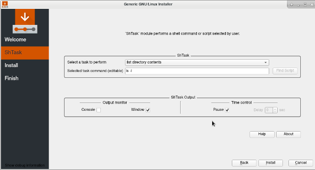
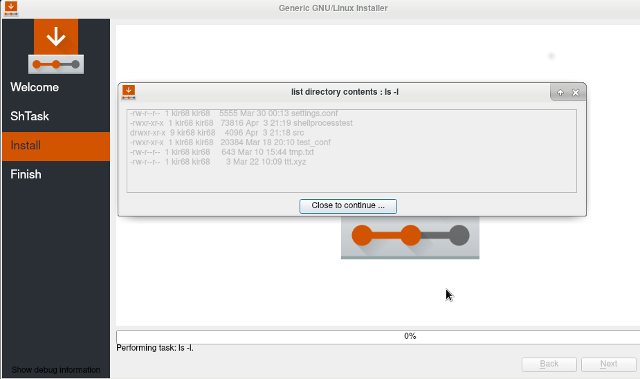

shtask
(shell task) module is a
Calamares
module
that allows to perform a shell command or script selected by user.
Module
shtask
(shell task) is a
Calamares
module.
Calamares is a distribution-independent installer framework which
has several modules.
‘shtask’ module is a simple Qt C++ GUI application, that allows
to perform a shell command or script selected by user.
Shell command list can be edit in the module configuration file
shtask.conf
.
‘shtask’ module interface looks as shown in ‘Module interface’ figure.
The interface is almost fully customizable by editing
shtask.conf
.
Thus, for example, the ‘moduleLabel’ parameter in
shtask.conf
defines
the user-visible module name, which is ‘ShTask’ by default.
The whole ‘ShTask Output’ groupbox can be hidden by setting
‘taskOutputBox’ to false. ‘Help’ and ‘About’ texts are also editable.
All the interface customization parameters are listed in
Customize interface
section.
Module interface supports shell command selection and, if necessary, correction.
The shell command output can be directed to console or a graphical window
(see
Usage
section).

Here the shell command output is directed to a graphical window.
The output is diplayed and module wait for ‘Close to continue…’ button press.
It can be useful to debug the module.

If
…/calamares/src/modules/shtask
directory does not exist after loading the
Calamares
,
please create the directory and copy in it
shtask
module-related files and folders.
The following installation step is optional and can be skipped.
There is a directory named
branding
in
shtask
module directory.
It contains files that can be placed in Calamares branding directory usually located
at
…/calamares/src/branding/default/
before Calamares installation and
at
/usr/share/calamares/branding/default/
after Calamares installation.
These files, excluding
shtask.sh
, are responsible for a
slideshow
displayed during execution steps. Script
shtask.sh
is an example that
can be modified. It is placed here to facilitate its finding.
If
shtask
module is properly listed in the Calamares configuration file
settings.conf
(see
Test module
section), it will prompt
user to select a task from the combobox list.
Select a shell command using ‘Select a task to perform’ combobox (see
‘Module interface’ figure). The selected command can be corrected in
‘Selected task command’ line edit. ‘’ShTask’ Output’ groupbox allows
to direct shell command output to console or a graphical window.
Output window closing delay and pause are also under control of
‘’ShTask’ Output’ groupbox items. Task name list ‘taskLabels’
and command list ‘taskCommands’, as well as other parameters, are defined
in
shtask.conf
configuration
file.
Shell command may also contain the name of the
script
to execute.
Module
shtask
reads
shtask.conf
, the module configuration file.
File
shtask.conf
contains parameters that control
shtask
module.
‘taskLabels’ and ‘taskCommands’ parameters define task selection list.
Some of the parameters like ‘moduleLabel’ and ‘moduleInfoLine’
allow to
customize
module interface.
If a parameter value is a string with special characters use quotes
(YAML rules).
The following parametes are available in shtask.conf:
String will appear in the Calamares module name list.
The parameter is created to customize module interface.
moduleLabel: ShTask
String will appear at the top of the task selection page.
The parameter is created to customize module interface.
moduleInfoLine: "´ShTask´ module performs a shell command or script selected by user."
String will appear to the left of the task selection combobox.
The parameter is created to customize module interface.
taskChoiceLabel: Select a task to perform
String will appear to the left of the command line edit.
The parameter is created to customize module interface.
taskEditLabel: Selected task command (editable)
If ‘taskOutputBox’ is true,
the groupbox that contains ‘Output monitor’ and ‘Time control’ elements
will be shown. The parameter is created to customize module interface.
taskOutputBox: true
String list for the task selection combobox.
The parameter is created to customize module interface.
taskLabels:
- current directory
- list directory contents
- "shell script shtask.sh"
String list of commands correspond to the labels in ‘taskLabels’ list.
For a bash script please indicate the correct script path.
If script file path is not indicated, module looks for the script
in current directory or in Calamares branding directory (see
Script
section).
taskCommands:
- pwd
- ls -l
- "bash anytask.sh"
If ‘taskScript’ string list is present,
module creates generated.sh script from the list.
A corresponding task appears in ‘taskLabels’ and
‘taskCommands’ lists under the name ‘generated script’.
File
generated.sh
is temporary file and will be deleted (see
Script
section).
taskScript:
- pwd
- uname-a
If ‘taskOutputConsole’ is true,
the command output appears in Calamares console ( “calamares -d” ).
The parameter is created to debug the module.
taskOutputConsole: false
If ‘taskOutputWindow’ is true,
the command output appears in a graphical window.
The parameter is created to debug the module.
taskOutputWindow: false
If ‘outputPause’ is true,
the command output widnow will pause and wait for a button to be pressed.
The parameter is created to debug the module.
outputPause: false
If interger is > 0,
the command output widnow sleeps for ‘outputDelaySec’ seconds.
The parameter is created to debug the module.
outputDelaySec: 0
If ‘taskHelp’ string list is present,
pressing ‘Help’ button displays the text created from the list.
taskHelp:
- "Select a shell command or script using 'Select a task to perform' combobox."
- "The selected command can be corrected in 'Selected task command' line edit."
- "Check 'Console' checkbox to send command output to Calamares console (calamares -d)."
- "Check 'Window' checkbox to send command output to a new graphical window."
- "If checkbox 'Pause' is checked, the output window stay visible until close button click."
- "If 'Pause' is unchecked, the output window will be shown for selected 'Delay' seconds."
- "The parameters that control module behavior are defined in 'shtask.conf' configuration file."
- "For more help please see README.html."
- "\n"
- "This text can be replaced in shtask.conf, the module configuration file."
If ‘taskAbout’ string list is present,
pressing ‘About’ button displays the text created from the list.
taskAbout:
- "'shtask' is a Calamares module."
- "It allows to select and perform a shell command or script."
- "\n"
- "This text can be replaced in shtask.conf, the module configuration file."
The configuration of Calamares is done in
settings.conf
.
The modules listed in
settings.conf
are loaded one by one.
To test ‘shtask’ alone comment all the modules in settings.conf
except of ‘welcome’ and ‘finished’ modules:
sequence:
- show:
- welcome
- shtask
- exec:
- shtask
- show:
- finished
branding: default
set ‘taskOutputBox’ parameter in
shtask.conf
to true.
It allows to monitor ‘shtask’ output.
The output can be directed to Calamares console,
if Calamares was started with debug option ‘calamares -d’,
or to a graphical window. Please see for details the description of
‘taskOutputConsole’, ‘taskOutputWindow’, ‘outputPause’ and
‘outputDelaySec’ parameters in
Configuration
section.
Module interface can be customized using following parameters from
shtask.conf
:
‘moduleLabel’, ‘moduleInfoLine’, ‘taskChoiceLabel’, ‘taskEditLabel’,
‘taskOutputBox’, ‘taskHelp’ and ‘taskAbout’.
Please see
Configuration
section for details.
Shell command may contain the name of the script to execute e.g.: ‘bash shtask.sh’.
If script file path is not indicated, module looks for the script in
current directory or in Calamares branding directory, which is usually
/usr/share/calamares/branding/default”
. Script file can be placed in
Calamares branding directory to facilitate search (see
Installation
section).
For manual search please use ‘Find Script’ button.
If ‘taskScript’ string list is present in
shtask.conf
, module creates
in current directory
generated.sh
script from the list. A corresponding task appears
in ‘taskLabels’ and ‘taskCommands’ lists under the name ‘generated script’.
File
generated.sh
is temporary file and will be deleted.
A slideshow is displayed during execution steps (e.g. when the
installer is actually writing to disk and doing other slow things).
To customize slideshow edit file
…/branding/default/show.qml
or replace it with
show.qml
provided by shtask module
…/calamares/src/shtask/branding/show.qml
and copy corresponding *
.png
files.
Please keep in mind that QML slideshow is common for all modules.